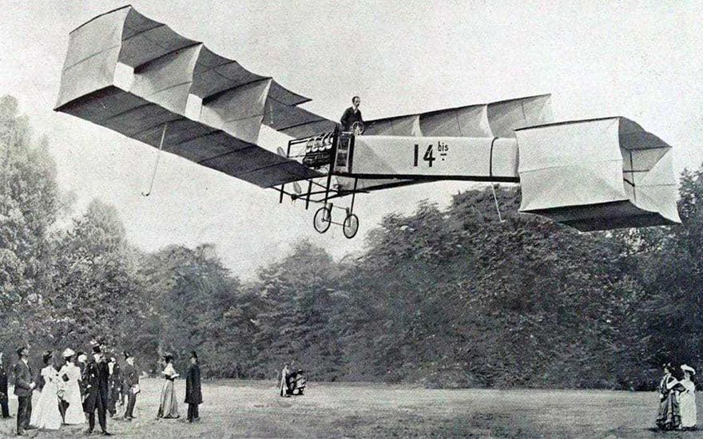
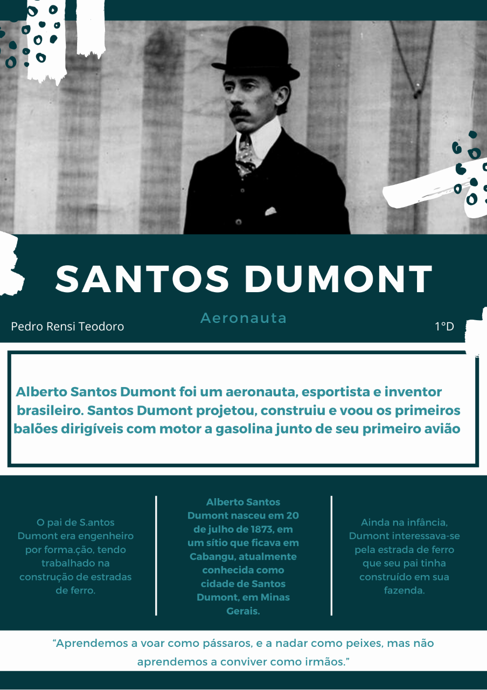
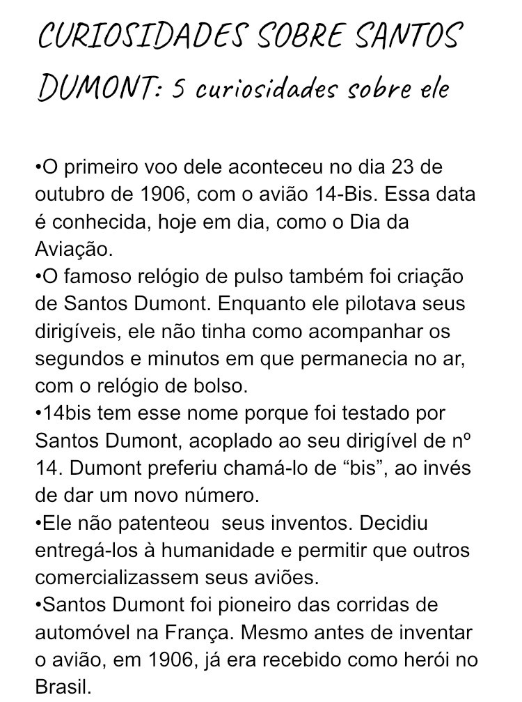

Como o Avião Surgiu?
Texto extraído do Site Mundo Educação O surgimento da aviação é uma das grandes evoluções tecnológicas da humanidade. A criação do avião foi um grande marco para a história, pois ele diminuiu de forma significativa o tempo de viagem entre duas cidades. Por exemplo, para viajar de Ouro Preto até o Rio de Janeiro gastava-se cerca de 12 dias, hoje com 50 minutos é possível realizar o mesmo trajeto. O avião teve origem com um brasileiro de ascendência francesa, chamado Alberto Santos Dummont, que teve a vida invadida pelo sonho de voar. Não somente ele, mas também os irmãos norte-americanos Wilbur e Orville Wrigh realizavam inúmeros experimentos de vôo, buscando fazer com que um objeto mais pesado que o ar pudesse voar. Contudo, nessa época já existiam alguns veículos como, por exemplo, os balões e zeppelins, que conseguiam se colocar acima das nuvens baseados nos princípios de Arquimedes, no entanto eles não tinham autonomia para voar, não satisfaziam os sonhos do homem por inúmeros motivos como, por exemplo, o fato de não poder controlar completamente o destino do vôo desses veículos. Foi em 23 de outubro de 1906 que Alberto S. Dummont apresentou um rústico avião a uma comissão julgadora, o 14-Bis, marcando dessa forma a origem da aviação. Mas como é possível um veículo, sendo mais pesado que o ar, voar? Quando no ar o avião não cai porque existem forças que atuam sobre ele, contrabalanceando seu peso, mas como o peso é direcionado para baixo a força que o equilibra no ar é direcionada para cima. O que faz com que um avião não caia é na verdade a velocidade dele e as suas asas. As asas de um avião são projetadas e construídas de forma que elas cortem o ar. Quando o avião está em movimento suas asas cortam o ar, fazendo com que a velocidade do ar que passa por cima da asa seja maior do que a velocidade do ar que passa por baixo, fazendo surgir dessa forma, uma força de baixo para cima equilibrando o avião. Ou seja, a pressão do ar na parte de baixo do avião é maior que na parte de cima, empurrando o avião para cima, é essa força que o mantém no ar. Assim, quanto maior o peso do avião maior deve ser a sua velocidade para que ele possa decolar e se manter em equilíbrio no ar.
Fonte: Mundo Educação
Quem foi Santos Dummont?
Curiosidades sobre Santos Dummont

• A casa onde Santos Dumont viveu em Petrópolis (RJ) também virou
atração turística na cidade. Lá, estão guardados objetos pessoais do
inventor, como o seu conhecido chapéu panamá. Também estão
preservados itens originais da residência, como o chuveiro e uma
escada, criada pelo próprio Santos Dumont, na qual só é possível
entrar pisando primeiro o pé direito (uma das superstições do
criador era sempre entrar com o pé direito em qualquer lugar). No
espaço, atualmente há um tour com informações sobre a vida e a obra
do homenageado.
• No Guarujá (SP), onde Santos Dumont se suicidou, existe um
pavilhão aberto para visitação ao carro fúnebre que transportou seu
corpo. O Chevrolet Ramona, modelo 1929, ainda guarda os detalhes
originais, como o motor seis cilindros. Naquele 21 de julho de 1932,
o automóvel saiu da Avenida Puglisi (onde está localizado o pavilhão
atualmente) e foi até a balsa Guarujá-Santos. De lá, o corpo seguiu
para São Paulo e, depois, para o Rio de Janeiro, onde está enterrado
no Cemitério São João Batista. O Grand Hotel de La Plâge, onde o
inventor estava hospedado quando se enforcou, foi demolido na década
de 1960. No local, funciona hoje o Shopping La Plage.
• A Fundação Santos Dumont nasceu em São Paulo no dia 5 de outubro
de 1956. Ela foi responsável pela criação do Museu da Aeronáutica no
Parque do Ibirapuera. Lá, estavam guardadas peças valiosas do acervo
de Santos Dumont, como réplicas de alguns de seus aviões. As más
condições de preservação, no entanto, levaram o museu a ser fechado.
Algumas peças do acervo foram transferidas para o Museu da TAM,
inaugurado em São Carlos (SP) em 11 de novembro de 2006. Em 21 de
janeiro de 2016, as atividades do museu foram encerradas, sem
previsão de retorno, em decorrência da crise econômica.
• Uma das maiores atrações do Museu Aeroespacial, localizado no
Campo dos Afonsos, berço da aviação brasileira no Rio de Janeiro, é
uma pequena estátua de Ícaro (personagem da mitologia grega que
tinha o sonho de voar) segurando uma esfera de bronze. Dentro dessa
esfera, preserva-se em formol o coração de Alberto Santos Dumont.
Nesse museu também há uma estátua do inventor ao lado da réplica do
14-Bis.
• Em 20 de julho de 1974, a Prefeitura de São Paulo inaugurou um
monumento em homenagem ao inventor. Uma réplica do 14-Bis foi
colocada no final da Avenida Santos Dumont, próximo ao Campo de
Marte, na zona Norte da cidade. A inauguração, em homenagem ao
centenário do “Pai da Aviação”, provocou a mudança no nome do local:
a Praça dos Bandeirantes virou Praça Campo de Bagatelle, em
referência ao local onde ocorreu o primeiro voo do 14-Bis. Na
madrugada de 19 de maio de 2006, justamente no ano do centenário do
primeiro voo do 14-Bis, o monumento foi completamente destruído. A
réplica, feita pelos artistas Oswaldo e Enivaldo Luppi, precisou ser
restaurada e hoje está protegida entre grades.
• Em Canoas (RS), há uma homenagem a Santos Dumont na Praça do
Avião, também chamada de Praça Santos Dumont. No local, há uma
réplica do primeiro avião a jato a chegar ao Brasil (um F-8 Gloster
Meteur inglês) em 1953 e um monumento que exalta as origens de
Santos Dumont.
• O primeiro aeroporto civil do Brasil foi batizado com o nome de
Santos Dumont. Inaugurado em 30 de novembro de 1936 e localizado
sobre um aterro à beira da Baía de Guanabara, no Rio de Janeiro, ele
recebe hoje apenas voos domésticos. Os voos internacionais chegam
pelo Aeroporto do Galeão (Tom Jobim), inaugurado em 1º de fevereiro
de 1952.
• Em 17 de novembro de 2011, a Câmara dos Deputados aprovou um
decreto obrigando todos os aeroportos e bases aéreas do país a
homenagear Santos Dumont com bustos, estátuas ou placas.
• O Museu do Amanhã, na Zona Portuária do Rio de Janeiro, apresentou
em 2016 a exposição “Poeta Voador – Santos Dumont”. Visitantes
entravam em uma réplica do Demoiselle, outro avião criado por Santos
Dumont, e realizavam uma simulação de voo pela Paris ou pelo Rio do
anos 1910.